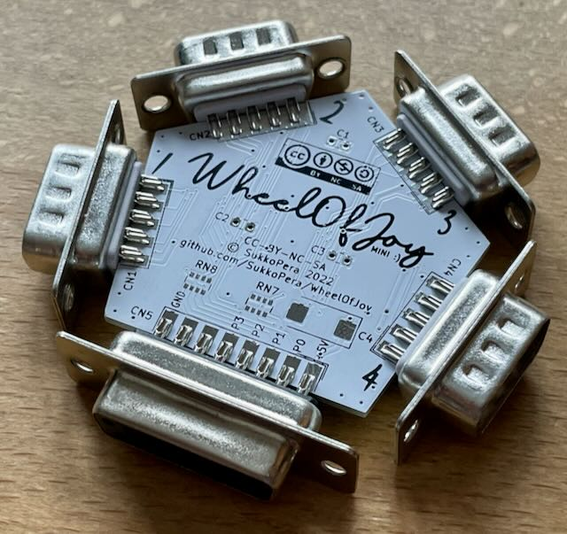
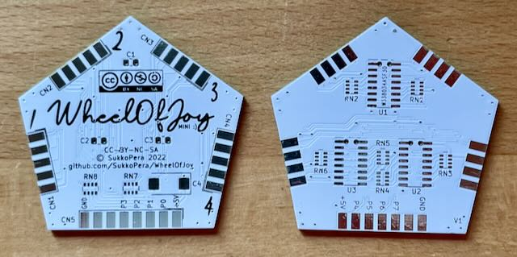
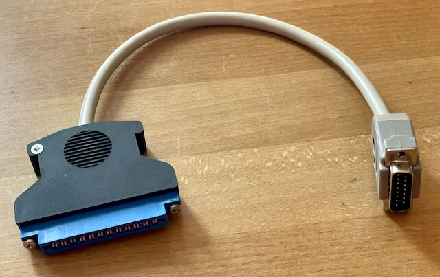

Mit diesem Adapter kann man 4 Joysticks mit 2 Feuerknöpfen am Userport anschließen. Mit entsprechendem Kabel ist er mit dem Plus/4 oder C64, C128, VC-20 kompatibel. Der zweite Feuerknopf muss jedoch nach GND gehen (wie am Amiga üblich), nicht nach 5V (wie am C64 üblich).
Projekt-Homepage • Interakiver Bestückungsplan
  
| Komponente | Anzahl | Preis | Anbieter |
| Platine | 1 | €1.00 | |
| 100nF Kondensator SMD 0805 | 3 | €0.06 | Reichelt |
| 100µF Elektrolytkondensator SMD | 1 | €0.18 | Reichelt |
| 8-4 100Ω Widerstandnetzwerk SMD 4x0603 | 2 | €0.10 | Reichelt |
| 8-4 4.7kΩ Widerstandnetzwerk SMD 4x0603 | 6 | €0.30 | Reichelt |
| 74LS153 SMD | 3 | €1.56 | Mouser |
| 90° D-Sub-15 Buchse | 1 | €0.48 | Reichelt |
| 90° D-Sub-9 Stecker | 4 | €1.44 | Reichelt |
| nur Platine | €1.00 | ||
| Bausatz | €5.12 |
| Komponente | Anzahl | Preis | Anbieter |
| D-Sub-15 Stecker | 1 | €0.35 | Reichelt |
| D-Sub-15 Gehäuse | 1 | €0.87 | Reichelt |
| Userport Stecker | 1 | €2.90 | Restore-Store |
| Userport Stecker Gehäuse | 1 | €5.85 | Restore-Store |
| 13 poliges Kabel, 1m | 0.25 | €0.42 | Reichelt |
| Bausatz | €10.39 |